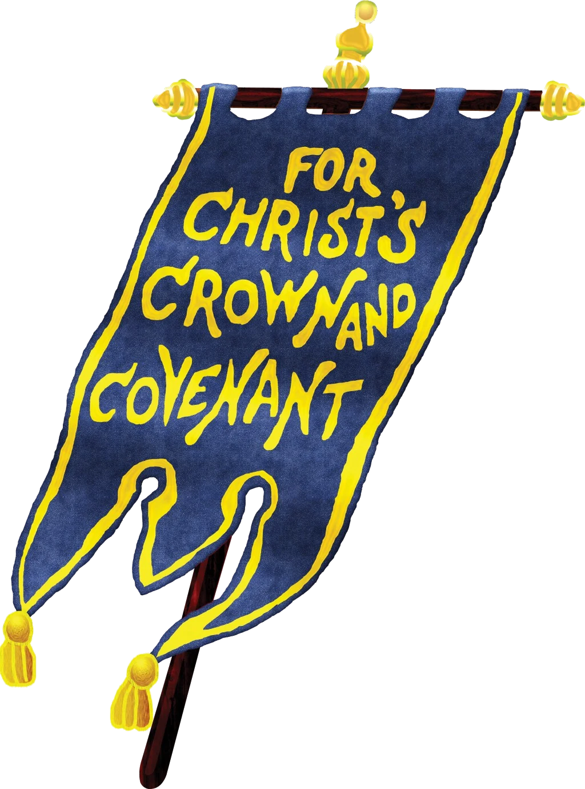

What is “Reformed”?
We are “Reformed” in that we adhere to distinctly Biblical principles of doctrine and worship. These principles were most clearly set forth during the Protestant Reformation of the 16th century and its further development in the 17th century. Our spiritual forefathers include John Calvin, John Knox, the English Puritans, and the Scottish Covenanters.
As Reformed Christians, we embrace the Scriptures of the Old and New Testaments as the inspired and inerrant Word of God, the only supreme and infallible rule of faith and life.
Our understanding of Scripture is summarized in the several confessions and catechisms that we have adopted as “agreeable unto and founded upon” the Scriptures. These include:
What is “Presbyterian”?
We are “Presbyterian” as regards our form of church government. In accordance with Scripture, each local congregation elects its own ruling and teaching elders to oversee them in the Lord. These local elders then participate in higher courts of appeal known as presbyteries, which are responsible for training and ordaining teaching elders (i.e. pastors). Each year, our presbyteries unite together to form a synod, which is our broadest and highest court of appeal.
- Congregation Elects its own ruling and teaching elders
- Presbytery Trains and ordains teaching elders
- Synod Our broadest and highest court of appeal

What is a “Covenanter”?
As Reformed Presbyterians, we have historically been known as “Covenanters.” This is because of our conviction that Scripture calls individuals, churches, and nations to express their faith, obedience, and loyalty to the Triune God, through Jesus Christ, by way of covenant (Ps. 2:10-12; Jer. 50:5; Rom. 10:9-10).
Historically, the Scriptural practice of covenanting was most clearly exemplified by Scottish believers during the 16th and 17th centuries. Moved by the Spirit of God, they courageously bore witness to Christ’s sole kingship over His Church and His universal authority over every human institution, including the state.
Known to historians as the “Scottish Covenanters,” they chiefly rallied around the Scottish National Covenant (1638) and the Solemn League and Covenant (1643). Far from a mere academic exercise, many of them signed these covenants in their own blood and later, during the notorious “killing times” (1680-1688), sealed their testimony with the same.
Almost two centuries later, the RPCNA ratified its own North American covenant, The Covenant of 1871. As Reformed Presbyterians, we happily join with our spiritual ancestors in raising the blue banner “For Christ’s Crown and Covenant” in at least two ways: (1) By seeking to advance and apply these glorious “reformation principles” in our own day, and (2) By occasionally renewing our Covenant of Communicant Membership.
Here are two sermons on the nature of covenanting:
Banner illustration: RP Witness
What about North America?
- Congregations
- 96
- Countries
- 3
- Presbyteries
- 7
- Total membership
- ~7,000
The RPCNA presently has 96 congregations in three countries (U.S., Canada, and Japan), organized into seven Presbyteries, with a total membership of around 7,000. New opportunities for global ministry may also be on the horizon in India, Pakistan, Latin America, and elsewhere. Sister RP denominations exist in Ireland, Scotland, Australia, and South Sudan. Domestically, we hold membership in the North American Presbyterian and Reformed Council.
The first organized RP congregation in North America was established in Middle Octorara in Lancaster County, Pennsylvania in 1738. The Reformed Presbytery was later constituted in 1774 by ministers sent for that very purpose: John Cuthbertson, who came from Scotland in 1752, along with Matthew Linn and Alexander Dobbin, who came from Ireland in 1774.
After its dissolution in 1782, the Reformed Presbytery of the United States of North America was constituted in 1798, in Philadelphia, Pennsylvania. The RP Synod was then constituted in 1809 and the RP Seminary in 1810.
The RPCNA currently oversees the following institutions:
- Three seminaries: Reformed Presbyterian Theological Seminary, in Pittsburgh, PA (founded in 1810), Ottawa Theological Hall (founded in 1980) and Kobe Theological Hall in Japan (founded in 1996).
- Geneva College, a liberal arts college in Beaver Falls, PA (founded in 1848).
- Crown & Covenant Publications, the publishing arm of the RPCNA’s Education and Publications Board.